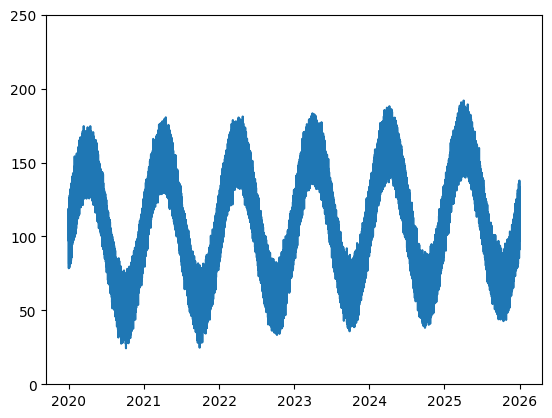
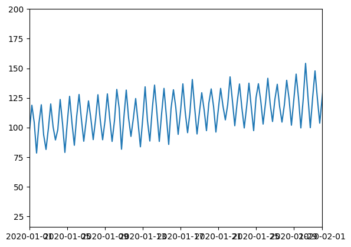
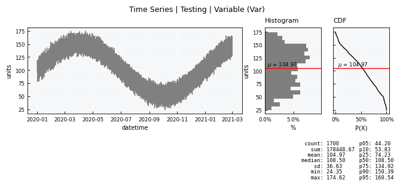
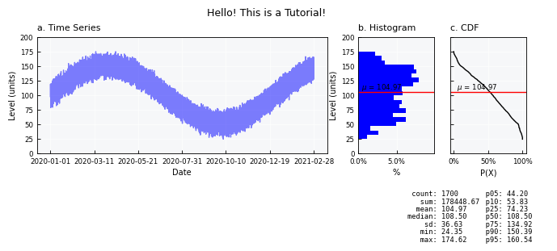
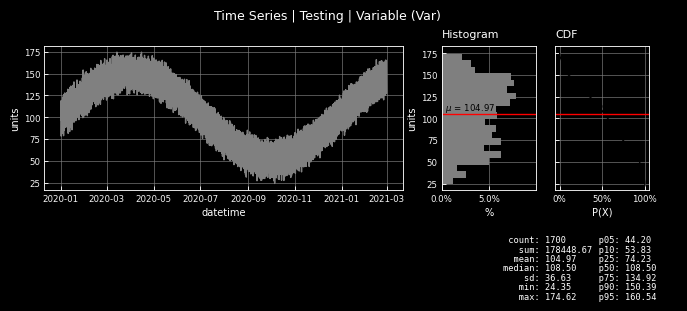
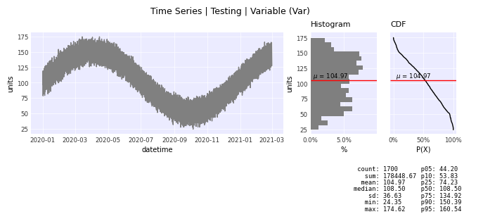
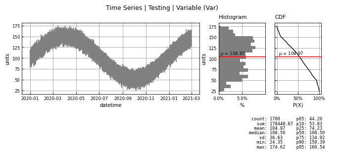
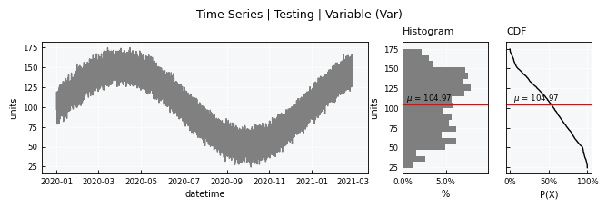
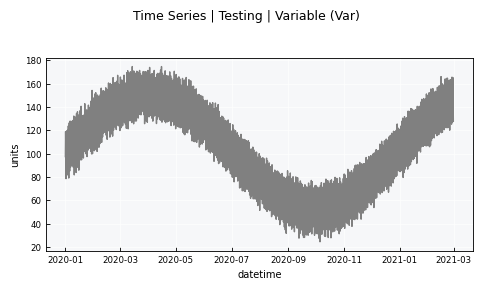
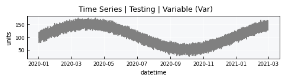

Time Series - the basics#
Notebook setup#
import sys
from pathlib import Path
# define output folder
OUTPUT_DIR = Path("outputs/time_series")
OUTPUT_DIR.mkdir(parents=True, exist_ok=True)
print(f"Outputs will be saved to: ./{OUTPUT_DIR}")
# Install `plans` in `google.colab`.
# Use `pip install plans` for other environments.
if "google.colab" in sys.modules:
import os
os.system(f"{sys.executable} -m pip install -q plans")
Outputs will be saved to: ./outputs/time_series
Import plans
import plans
Import other useful libraries
import pprint
import numpy as np
import pandas as pd
import matplotlib.pyplot as plt
# This avoids warnings related to uninstalled fonts
import logging
# Set the matplotlib font manager logger to only show errors (hides warnings)
logging.getLogger('matplotlib.font_manager').setLevel(logging.ERROR)
The TimeSeries object#
The TimeSeries object is a very primitive class that lives under plans.datasets module.
This object is a child from the Univar object that lives in plans.analyst module.
The TimeSeries stores all core methods for working with time series, incluing standardization.
Import TimeSeries object:
from plans.datasets import TimeSeries
Create an instance of the TimeSeries:
ts = TimeSeries(name="Testing", alias="tst")
Check out the ts variable type:
print(type(ts))
<class 'plans.datasets.core.TimeSeries'>
Handle attributes#
Inspect state for major attributes:
print(ts)
[Testing (tst)]
TimeSeries (DS): <class 'plans.datasets.core.TimeSeries'>
field value
name Testing
alias tst
size None
color orange
source None
description None
units units
code None
x None
y None
variable_field v
variable_name Variable
variable_alias Var
variable_range_min None
variable_range_max None
variable_min None
variable_max None
datetime_field datetime
datetime_freq None
datetime_res None
start None
end None
is_standard False
gap_size 6
epochs_n None
small_gaps_n None
file_data_datetime_field datetime
file_data_variable_field v
file_data None
Data:
None
Edit attributes directly and inspect again
ts.description = "A testing time series for a tutorial"
ts.units = "cm"
print(ts)
[Testing (tst)]
TimeSeries (DS): <class 'plans.datasets.core.TimeSeries'>
field value
name Testing
alias tst
size None
color orange
source None
description A testing time series for a tutorial
units cm
code None
x None
y None
variable_field v
variable_name Variable
variable_alias Var
variable_range_min None
variable_range_max None
variable_min None
variable_max None
datetime_field datetime
datetime_freq None
datetime_res None
start None
end None
is_standard False
gap_size 6
epochs_n None
small_gaps_n None
file_data_datetime_field datetime
file_data_variable_field v
file_data None
Data:
None
Working with perfect data#
A perfect data for time series means that there are no time gaps, so it does not need standardization.
Create synthetic time series data#
Lets first make a perfect time series using .make_synthetic_tsn() method and save it to a CSV file.
This method makes a Trend-Seasonality-Noise archetype time-series:
# make synthetic TSN (Trend-Seasonality-Noise) time-series
df = TimeSeries.make_synthetic_tsn(
start="2020-01-01",
end="2026-01-01",
base=100,
freq="6h",
trend=0.002,
noise_sd=3.0,
amplitude=50,
seasonal_period="YS",
minor_amplitude=20,
minor_seasonal_period="D"
)
# Export CSV file
file_csv = OUTPUT_DIR / "time_series.csv"
df.to_csv(file_csv, sep=";", index="False")
print(f"Saved to: {file_csv}")
Saved to: outputs/time_series/time_series.csv
The whole time series looks like this:
# get simple visualization
plt.plot(df['datetime'], df['level'])
plt.ylim([0, 250])
plt.show()

A zoom to the month scale:
# get simple visualization
plt.plot(df['datetime'], df['level'])
plt.xlim(pd.to_datetime(["2020-01-01 00:00:00", "2020-02-01 00:00:00"]))
plt.show()

Loading data from the CSV file#
Call the .load_data() method for loading from CSV file:
# reset the ts variable
ts = TimeSeries(name="Testing", alias="tst")
ts.load_data(
file_data=file_csv, # file path
input_dtfield="datetime", # name of datetime field
input_varfield="level", # name of variable
in_sep=";", # input separator
filter_dates=["2020-01-01", "2021-03-01"] # filter dates
)
Data is stored in the .data attribute:
ts.data
| datetime | v | |
|---|---|---|
| 0 | 2020-01-01 00:00:00 | 97.379400 |
| 1 | 2020-01-01 06:00:00 | 118.800589 |
| 2 | 2020-01-01 12:00:00 | 104.343579 |
| 3 | 2020-01-01 18:00:00 | 78.481602 |
| 4 | 2020-01-02 00:00:00 | 103.554053 |
| ... | ... | ... |
| 1695 | 2021-02-27 18:00:00 | 126.902964 |
| 1696 | 2021-02-28 00:00:00 | 145.043298 |
| 1697 | 2021-02-28 06:00:00 | 165.122248 |
| 1698 | 2021-02-28 12:00:00 | 146.357189 |
| 1699 | 2021-02-28 18:00:00 | 127.836268 |
1700 rows × 2 columns
Built-in visualizations#
Most plans.datasets objects comes with built-in methods for getting visualizations, both inline and figure output.
Standard visualization#
Get the standard visual using the .view() method
ts.view()

Fine-tuning visual items#
Fine-tune plot specs by editing the .view_specs attribute dictionary
# edit specs
# color of the main line
ts.view_specs["color"] = "blue"
ts.view_specs["alpha"] = 0.5
ts.view_specs["color_hist"] = "blue"
# Labels
ts.view_specs["ylabel"] = f"Level ({ts.units})"
ts.view_specs["xlabel"] = "Date"
# Titles
ts.view_specs["title"] = "Hello! This is a Tutorial!"
ts.view_specs["subtitle_data"] = "a. Time Series"
ts.view_specs["subtitle_hist"] = "b. Histogram"
ts.view_specs["subtitle_cdf"] = "c. CDF"
# Axis
ts.view_specs["range"] = [0, 200.0]
# Number of dates in the X axis
ts.view_specs["n_dates"] = 7
# Call view() again
ts.view()

List all view specs keys:
pprint.pp(ts.view_specs.keys())
dict_keys(['style', 'gs_wspace', 'gs_hspace', 'gs_left', 'gs_right', 'gs_bottom', 'gs_top', 'folder', 'filename', 'fig_format', 'dpi', 'title', 'xvar', 'yvar', 'xlabel', 'ylabel', 'color', 'xmin', 'xmax', 'ymin', 'ymax', 'mode', 'subtitle_data', 'subtitle_hist', 'subtitle_cdf', 'yvar_field', 'xlabel_cdf', 'data_label', 'data_legend', 'color_hist', 'color_cdf', 'color_mean', 'color_mean_text', 'scheme_cmap', 'cmap', 'colorize_scatter', 'alpha', 'alpha_hist', 'alpha_cdf', 'range', 'range_x', 'plot_mean', 'linestyle_mean', 'pad_mean', 'hist_density', 'bins', 'bins_density', 'ax_data', 'ax_histh', 'ax_cdf', 'x_stats', 'x_stats_sep', 'y_stats', 'zorder_data', 'zorder_histh', 'zorder_cdf', 'color_aux', 'color_fill', 'color_eva', 'legend_eva', 'alpha_aux', 'alpha_fill', 'fill', 'fill_only', 'xmax_aux', 'linestyle', 'marker', 'marker_eva', 'drawstyle', 'n_bins', 'n_dates', 'include_eva'])
Reset view specs to default values:
ts._set_view_specs()
Saving to figure file#
Save to a figure file the visual by setting show=False. This will save in the same folder of the data with a standard name.
ts.view(show=False)
A custom figure export can be achieved by changing the folder, filename, and fig_format parameters of the .view_specs
ts.view_specs["folder"] = OUTPUT_DIR
ts.view_specs["filename"] = "Testing - blue - 2"
ts.view_specs["fig_format"] = "jpeg" # instead of jpg
ts.view(show=False)
Changing visual style#
The visual overall style can be switched via the style key. The default style is wien.
List all available styles:
from plans.viewer import FIG_STYLES
pprint.pp(FIG_STYLES.keys())
dict_keys(['bare', 'wien', 'wien3d', 'wien-light', 'wien-clean', 'seaborn', 'dark'])
Change to dark style:
ts.view_specs["style"] = "dark"
ts.view()

Change to seaborn style:
ts.view_specs["style"] = "seaborn"
ts.view()

Change to bare style:
ts.view_specs["style"] = "bare"
ts.view()

# reset view specs
ts._set_view_specs()
Changing layout mode#
The visual layout mode can be changed via the mode key. The default mode is full.
Full mode, use full:
ts.view_specs["mode"] = "full"
ts.view()
Minimalistic mode, use mini:
ts.view_specs["mode"] = "mini"
ts.view()

Simple mode, use simple:
ts.view_specs["mode"] = "simple"
ts.view()

Simple mode, shallow plot, use simple-shallow:
ts.view_specs["mode"] = "simple-shallow"
ts.view()
